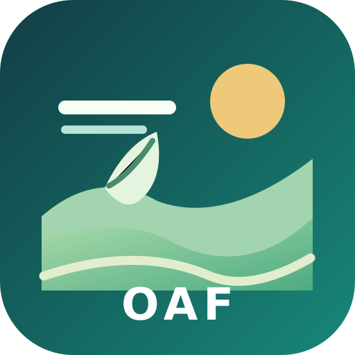

No hay conexión disponible
La aplicación mantiene el acceso a la estructura del observatorio y a los recursos guardados en este dispositivo. Para cargar nuevos datos meteorológicos, mapas externos y comunicados oficiales, necesitas Internet.
Importante: no interpretes ningún pronóstico o probabilidad almacenados anteriormente como una actualización del día. Verifica la fecha de emisión y el organismo responsable.
Volver al observatorio OAF-Lambayeque · Datos abiertos y ciencia climática al servicio del campo